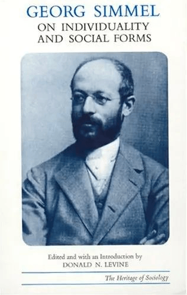
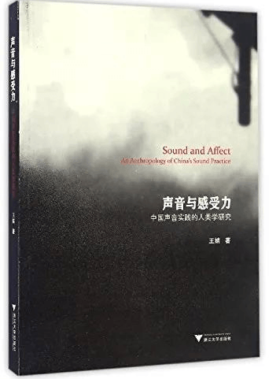
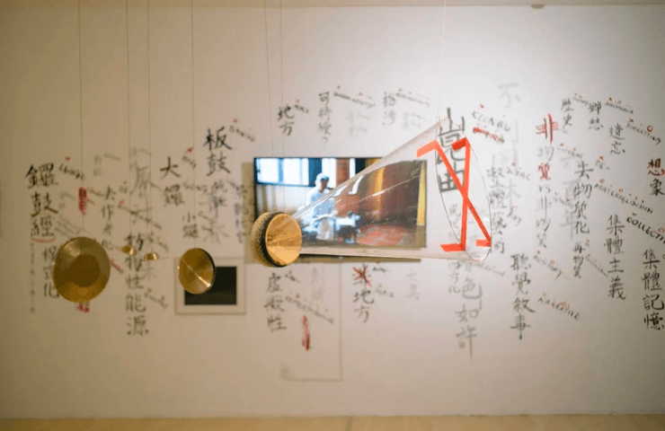
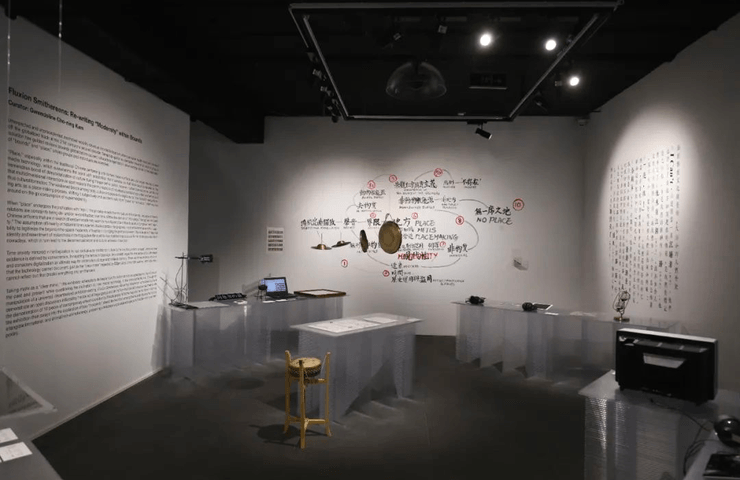

GWENDOLINE KAM
ABOUT
PRESS
WORK
金 佐 寧
關於
媒體
作品
1/1
在“虚拟”的锣鼓中听见
金佐宁
你聽見了嗎？
在日常的對話語境中，我們常會被這樣問到。這句話或被用以確認對發言者所傳達之信息的接收與重視，或是在某種異常聲響發生時，被用來提示判斷緊隨的相應行為。倘若細想，不難發現大家的耳朵都似乎只在各種需要迫切「確認」和「決定」的情況下，方能最大程度地打開、接收、感受，分析並儘可能地預見後果。此時，我們才成為真正的「聽者」。有關「聽」這一感官行為的意義，也許在絕大多數時候，我們都只是在無意識、理所當然地接受聲波對耳膜的刺激和振動，尚未達至真正的「聽見」。「聽見」，其意義實不應止於「聽」，而該是在對聲音作出初步辨析的基礎上，對存在於聽覺（「聽」）和視覺（「見」）間的感官聯動關係的意識和體會，以無形的聲音提示、補充、完善有形的視覺形態輸入，使信息獲取更為精確、全面。在文化層面上，「聽見」亦可被解讀為在聲音的出現、續存、變化乃至消失中觀察人、事、物三者間的關係，並分析知識生產、認知過程和社會文化導向是如何在時間流中變更轉移，洞見當下更亟需聚焦解決的文化議題。
然而，在被圖像占據、主張「所見即所得」的物質景觀社會（the society of the spectacles）中，視覺先導的感官文化（culture of the senses）促使聽覺被最大程度的削弱，聲音製造的本質意義逐漸消散。隱藏在幾乎「失去」的聽覺背後，等待我們的又將是何種文化危機？

* * *
上文談及的「聽到以後才能真正見到」，其實並不新穎，且已在利用鑼鼓音樂（以下簡寫作「鑼鼓」）作程式化聲音敘事、建構「聽覺先決」欣賞模式的中國傳統戲曲藝術中，實踐了數百年的時間，尤體現於最具代表性的昆曲舞台表演之上。
當一場「一桌兩椅」的昆曲表演帷幕拉開，緩急有序、由板鼓樂師率領的鑼鼓先於一切進入觀眾的感官。「多多乙 台大台 台大台 台大台大台台台台 台大 令令台 令令台 大 台」[1]，鑼鼓經（即鑼鼓表演記譜法）以地方方言文字指代樂器板鼓、大鑼、鐃鈸、小鑼發出的聲音，透露著人們基於傳統社會對性別、階層、禮俗、大自然等文化背景的認知，創造出多種規範而又兼具靈活性的鑼鼓節奏組合框架，用以模擬多種不同的生活場景聲響，自然與人物形態。從象聲、擬聲到擬象，昆曲鑼鼓的設計與歷史聲景、文化觀念及公眾集體記憶緊扣相連，因而具備虛擬性（representational）和指涉性（referentiality），使其在「無形」之中有效地傳遞「有形」的信息，賦予觀眾無限的想象空間，亦使傳統戲曲能以經濟簡約卻又靈活應變的「一桌兩椅」舞台設置，涵蓋文、武場表演的形式和氛圍，向觀眾預示即將登場的角色的身份、年齡、性格、情感和演員本身的心理狀態，甚至能在視覺形態與故事寓意產生矛盾時，助以表達弦外之音、象外之趣。
鑼鼓以聲音為界限定義了昆曲，從表演形式、人物和情感氛圍三方維度建構起昆曲舞台，並在戲裡、戲外自始至終為故事、風格形式的存在指引了方向，為存在確認了位置，[2] 給予觀眾對表演的合理預期，成為他們理解故事的前提條件。因此，欣賞昆曲乃至其他傳統戲曲劇種時，我們並不是在「看戲」，而是在「聽戲」；聽的也不應只限於演員的唱與念，更應傾聽鑼鼓作為昆曲整體藝術中不可或缺的部分，是如何利用「聽覺敘事」（auditory narrative）塑造昆曲的表演框架。如此，我們對故事、對昆曲、對傳統戲曲才能看得全、見得真。
On Individuality and Social Forms, Georg Simmel
University of Chicago Press, 1971
* * *
2021年夏天，我在一場題為「探 · 路」（Invisible Path）的TEDx 項目中，分享了自己作為音樂人類學者是如何以昆曲鑼鼓研究為起點，逐步涉足當代藝術創作及策展實踐。演講開始，我即向在場聽眾提問：「大家有否想過，我們的耳朵能影響甚至決定傳統表演風格的命運？」
以此，我點出昆曲鑼鼓的存續正因人們的漠視而面臨困境——它被誤解、被邊緣、被「無形」化，甚至已行走在逐步「消失」的道路上。若然如此，當下我們所欣賞的又是怎樣的昆曲表演？讀者或許會疑惑，昆曲自2001年入選聯合國教科文組織非物質文化遺產名錄至今已整20年，其在國內外備受多方關注和支持，在各種「跨界」合作當中似乎也覓尋到了新的生存方式和路徑。鑼鼓作為昆曲表演藝術的首要部分之一，應當自然而然、順理成章地成為焦點的。的確，「非遺化」為昆曲帶來了更多機會和不同層面社會愛好者的矚目，但在景觀消費主義社會的環境下，人們對昆曲的認知及理解卻幾乎只停駐在「目所能及」的範圍：演員的身段、妝扮、服飾，以及為當下趨慕的「沉浸式」體驗而鼓吹的「實景」舞台或古典園林。表演、學術、文化機構所做的推廣普及、研究和出版物，亦基本圍繞演員的唱念做打（偶爾稍加覆蓋曲牌及新編劇本），關於鑼鼓的功能分析屈指可數。當人們欣然接受「非遺」「昆曲600年」等標籤所帶來的與眾不同和距離，而缺乏對「誰的遺產？」「誰定義的遺產？」「真的是遺產嗎？」等問題的拷問時，本屬於「我們」（the Self）的昆曲慢慢地變成了一種景觀，而我們則成了好奇圍觀的「他者」（the Others），對自身的傳統文化報以局外人的想象，因而難以真切體悟個中精粹和與當代有可能的關聯。在由視覺主導的當下，蘊藏着更多文化信息和界限指引的昆曲鑼鼓，在大多數時候，都只被當作一種陪襯。
當傳統戲曲在當代表演劇場面對西方空間規訓（space discipline）時，昆曲鑼鼓與它的樂師所面對的問題也變得更為複雜。在歌劇廳、大劇院上演傳統戲曲，觀眾尚未進入觀演空間之前，身體的感官和行為便已被提示固定於古典音樂表演形式的認知框架中。為符合「當代審美」，戲曲表演團體也只能遵從表演空間的規劃，將原該與演員同台、被稱之為「場面」的鑼鼓和其他樂器的樂師置於舞台右側幕布後方，或如西方歌劇般置於下沉式的樂池當中，甚至認為前排觀眾「會覺得吵」而將大鑼、鐃鈸、小鑼的樂師規限於定制的吸音「樂籠」裡。演出開始，全場變得黑暗，唯一的物理光源在舞台上空。對於居住在城市，生活、工作甚至精神空間都被視覺刺激最大限度地占據而幾乎喪失黑暗體驗的人們[3]而言，舞台上的光就是他們在黑暗劇場裡的全部方向，看不見的鑼鼓像西方歌劇的打擊樂伴奏一樣，是一系列經設計可重複使用的固定聲響組合，是有則錦上添花，無亦無傷大雅的背景音樂。弔詭的是，鑼鼓喧天，觀眾只能聽到它作為噪音的吵鬧，卻聽不到它的「文化敘事性」如何在黑暗劇場中成為使他們正確理解台上表演的唯一的「光」。

聲音與感受力，王婧 / 著
浙江大學出版社 2017
當昆曲鑼鼓樂師失去與演員並置於觀眾同一視線下的權利，當鑼鼓淪為「伴奏」，從其在表演空間的物理性隱形，再到其在表演實踐中遭遇功能性隱形，這些都是在層層遞進地顯示景觀社會對昆曲鑼鼓的誤解以及對其話語權的削弱，並將鑼鼓和與它相關的人、物步步推向經濟的邊緣、社會的邊緣甚而消失的邊緣。即便在近年流行於黑盒子劇場（Black Box Theater，其實際上仍未能擺脫西方表演空間的概念和規訓）演出的小劇場「實驗」戲曲形式中，鑼鼓樂師雖基本與演員「同台」，但受光程度依然位居次席。在傳統戲曲依舊沉醉於進步主義和發展主義的迷思及對「跨界」的臆想的情況下，不少以「實驗」為動機的「當代昆曲」演出現場將鑼鼓隱於體積碩大的西方打擊樂器之中。而突如其來且難得的「曝光」機會，亦讓一部分自感被忽視的樂師企圖通過加入其他地方文化的打擊樂和節奏的方式，向觀眾展示昆曲具備對他國文化的「包容性」，是「當代」、「前衛」和「先鋒」的，以此順應潮流，引起景觀社會中人們的獵奇關注。事實上，傳統並不是萬年不變的固態，其本已具備在原則之上隨時代作出相應變更的能力。但如果建構、定義昆曲表演框架的程式化鑼鼓被恣意取代，且無論從視覺或聽覺上都無從尋蹤時，我們便該深思：這種表現形態是否能與「昆曲」畫上等號？抑或這是否是一種東方主義（Orientalism）下憑藉對昆曲的無限想象而創作的一種西方音樂劇場形式？假若傳統的「當代性」、「實驗性」和「跨界」只是西方線性的時間哲學中以其文化為「更新」手段的代名詞，本擁有地方界限和非西方式現代性的傳統戲曲終日漸趨於同質，難以確認自身位置和方向。「跨界」，到底是「跨」了還是讓界「垮」了？
* * *
「跨界」作為十數年前被鑄造的「新詞」，蔓延於學術、藝術、文化、科技、商業等社會各層面。而近年的情況，更有漸上塵囂之勢：凡是「素未謀面」的媒介，只要在視覺或某個概念上有一星半點的類同，便可被並置，稱為「跨界」。雖然一直主張「平等對話」，可在相當一部分時間裡，主流與非主流的「話語權落差」依然存在於參與者之間，人們抱著對「跨界」創新的希望，為「非主流」覓尋新的發展路徑。
誠然，「跨界」並無對錯。但「界」要跨得其所，使「跨界」能有效成為知識生產的一環，便需以明晰跨越動機和對彼此界限的厘清為前提。實際上，「跨界」並非這十餘年才出現的新概念，「翻譯」、「跨學科」、媒介物質間的轉換等都是「跨界」的一種體現。它們均在「跨」的過程中，整合參與方各自擁有的知識、資源，在並置、層疊、交融中拓寬彼此的受眾面，在促進知識生產的同時，亦對主體和客體的界限進行再審視、再確認。可惜在當下「跨界即無界」的迷霧中，人們鮮少深思自身是在什麼界限之內，又是在什麼別樣東西的界限之外，甚至因過於渴望快速獲得他者的投入和認同，而迫不及待地將其外殼強加於身，並稱之為「平等交流」。就如昆曲，無數翻譯將它寫成kunqu opera，鑼鼓則被簡單譯作 percussion（打擊樂），唱腔和念白分別與aria和recitative 畫上等號。若然做一下回譯（back translation） ，kunqu opera是「昆曲歌劇」，percussion則只是從西方樂器學的角度表達了致使鑼鼓發聲的方法，而未傳譯其敘事功能。不需深諳音樂知識理論，人們也能對這當中的問題一目瞭然。在翻譯的「加持」之下，亦難怪人們總認為昆曲鑼鼓只是扮演著與西方打擊樂一樣純粹的伴奏角色。
翻譯之中必然有丟失與發現（lost and found）。所謂「丟失」，也許是文化差異所致，亦可能是某種取捨、妥協。但在翻譯、回譯、再翻譯的過程中的「發現」，在一定程度上能回應、反駁「丟失」中被隱去的部分，也能對主題作補充、引申之用。學術研究雖常年與翻譯為伴，研究成果卻偏向以理論且生澀的文字為單一輸出方法，以大眾藝術為研究中心的學科亦未能將「知悉及參與權」交付與和藝術真正發生緊貼關係的藝術家和受眾。雖偶有交流，但學術、藝術與公眾之間的隔閡導致前兩者缺乏民主性，因而難以激發公眾參與式藝術（socially engaged art），更難以實現公眾發起式藝術（socially initiated art）。
* * *
從聽到昆曲鑼鼓臺前幕後的各種境況，到在翻譯中見到不同潛在的有趣關聯，我開始嘗試將學術研究的成果以藝術作品形式展現。在寒山美術館展出的《歸》（'F' to Bill）是我以藝術家身份創作的首個裝置作品。大鑼、鐃鈸、小鑼、板鼓依次並列懸掛於展覽空間。被破開膛門的板鼓，連接著大型「透明揚聲器」，其開口處被貼上交叉的、帶「警示性」的紅色膠帶，以表達樂師即便奮力敲擊板鼓、帶領其他銅響器配合發出如此巨大的聲音，提示著正確理解舞臺表演的方向，人們卻聽而不聞，甚至將之視為噪音，並在弱化其功能的過程中使它慢慢被靜音、消失。參觀者可以隨意推動、敲擊裝置中的鑼鼓致其發聲，務求能使鑼鼓脫離「樂器」的定義，將它由複雜、公式化的演奏方式中釋放，協助觀眾擺脫「昆曲」固有語境的局限和枷鎖，並以鑼鼓作為面向更廣闊的現象世界的媒介，尋找更理想有效的「跨界」方式。這一設計意圖亦與鑼鼓背後的文本牆相互呼應。固化的昆曲標籤以淡灰色呈現，層疊覆蓋之上的是當下觀眾有關昆曲「典雅」想象的最流行的視覺元素——手抄工尺譜。在作品中，工尺譜中本為曲詞、唱腔和板眼的標識位置，分別被我以在研究中發現的與昆曲鑼鼓相關的哲學和當代藝術觀念詞彙（如去物質化、去作者化等）、其英文翻譯及發音音節替代，意在反諷在當代消費主義社會，人們盲目與西方「跨界」，缺乏認知和審視的精神，由此對傳統文化造成的扭曲和威脅。
刻意製造翻譯落差或錯誤的矛盾對比，利用中英互譯中可能出現的重合、引申和衝擊，是我一直以來的創作手法，望通過透視視覺與聽覺隱藏在翻譯中的角力，喚起人們對聲音的關注和興趣。這均可見於我近年策劃的一些對談或工作坊的標題當中，如「『戲·鼓』——昆曲鑼鼓的樂與怒」（上海民生現代美術館，2018）中的「樂與怒」，表面上因發音近似而被翻譯成 Rock N' Roll，實際上暗指為媲美潮流而隨意從視覺形態層面與西方音樂扯上關係的行為。又如「設計『虛擬』：昆曲鑼鼓與聽覺敘事」（中央美術學院設計學院，2019），下劃線標出的「虛擬」在當代基本指代利用高科技實現以視覺為主的仿實物或偽實物的技術，比如VR，但「虛擬」在傳統戲曲卻又另指在鑼鼓音樂創作中對事物去物質化（de-materialization）後聲音所持的表征性，賦予觀眾更多視覺以外、個性化的想象空間。而借傳統戲曲的「非物質」和「無形」概念來回轉譯，我亦梳理出昆曲鑼鼓在景觀消費主義社會面臨的危機：從由動物性能源（animal energy）創造、具有文化敘事性的非物質變為以抵禦時間洗禮、非動物性能源反復單一操控的去物質與非物質（de-materialize/immaterialize）聲音；從蘊含地方知識（metis）的地方變成數碼的、為消費而存在的「非地方」（non-place）；而最後，又是否會在從無形到無形之中變得無一席之地（no place）？

金佐寧，《歸》（2021），顯示屏幕，鑼鼓（板鼓、大鑼、
鐃鈸、小鑼），亞克力板
* * *
以這些線索為框架，我的方案「碎鏡的流動：界限感知中重寫的『現代性』」在OCAT研究中心「2021研究型展覽策展計劃」入圍方案展展出，邀請到8位本土藝術家、10件跨越傳統和當代概念的藝術作品，參與了一場由昆曲鑼鼓聲音發起的去中心化、開放式的討論。展覽圍繞當代社會對科技及數字媒體的依賴，試圖觸發公眾對「線性時間」的質疑和反思，重新審視傳統文化的環形時間觀獨有的現代性如何在當下合法化，並為它們在當代語境下尋找可持續的「棲身之所」。
「時間」，其實也是音樂人類學者在文字以外經常要「翻譯」的詞條。在不同的記譜法則之間轉換，比如將昆曲工尺譜以五線譜（包括將其簡化後演變而成的數字簡譜）來記述，我們經常碰到西方記譜無法傳譯傳統戲曲音樂相對自由的表演風格的情況。這都可歸因於五線譜的空間規劃基於西方對時間是線性的假定，因此其所展現的每一個空間都是標準均等、阻隔而斷裂的。亦因如此，機械與科技才會被賦予量度、分析、抗衡與超越時間的權力。「從未實現，所以實驗。標準以外，規矩以內。圓周之中，自觀觀他。」是我為第一次實驗音樂演出[4]所寫的節目介紹。
